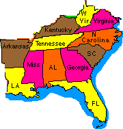

Southeast
Regional
Social Studies Conference

Directory
Click on Topic of
Choice
Southeast Regional Conference
States Information
Contact
Us
top
A
Definition for Social Studies
Social
Studies is the integrated study of the social sciences and
humanities to promote civic competence. Within the school program,
social studies provides coordinated, systematic study drawing upon
such disciplines as anthropology, archeology, economics, geography,
history, law, philosophy, political science, psychology, religion,
and sociology, as well as appropriate content from the humanities,
mathematics, and the natural sciences. The primary purpose of social
studies is to help young people develop the ability to make informed
and reasoned decisions for the public good as citizens of a
culturally diverse, democratic society in an interdependent
world.
Note: The NCSS
(National Council for the Social Studies) House of Delegates voted
overwhelmingly in November, 1992, to approve this final version of
the definition of social studies presented by the NCSS Board of
Directors.
Welcome
to the Southeast Regional Social Studies Conference Home
Page!
 History
Alive! is a series of instructional practices used by
social studies teachers that allows students with multiple
intelligences to "experience" history. These teaching methods were
developed by teachers who carefully and thoughtfully combined
educational research and theory with the realities of classroom
teaching. Howard Gardner's theory of multiple intelligences,
Elizabeth Cohen's research on cooperative groupwork, and Jerome
Bruner's notion of the spiral curriculum form the theoretical
backbone for the History Alive! approach. In addition, Teachers'
Curriculum Institute has developed powerful teaching strategies that
incorporate the three premises of the History Alive! program.
History
Alive! is a series of instructional practices used by
social studies teachers that allows students with multiple
intelligences to "experience" history. These teaching methods were
developed by teachers who carefully and thoughtfully combined
educational research and theory with the realities of classroom
teaching. Howard Gardner's theory of multiple intelligences,
Elizabeth Cohen's research on cooperative groupwork, and Jerome
Bruner's notion of the spiral curriculum form the theoretical
backbone for the History Alive! approach. In addition, Teachers'
Curriculum Institute has developed powerful teaching strategies that
incorporate the three premises of the History Alive! program.
- 1. Students have multiple intelligences.
- 2. Cooperative interaction increases learning and improves
social skills.
- 3. All students can learn.
Teachers' Curriculum
Institute, 1170 East Meadow Drive, Palo Alto, CA 94303
800.497.6138 info@teachtci.com

The
Complete NATIONAL GEOGRAPHIC: 108 Years of NATIONAL GEOGRAPHIC on
CD-ROM
1-800-437-5521
top
Click on topic to go
there:
| Home
| The
Social Studies
Educator|
Southeast Schools |
Link
Library | Geography
Sources
|
Sponsors a-l |
Sponsors
m-z | Charter
School Systems
|
Charter Schools |
| Charter
Web Site Members a-l |
Charter
Web Site Members m-z |
Charter
Organizations |
Conferences
|
Announcements
| Product
Reviews | Magazine
Reviews | Book
Reviews | Software
Reviews | Video
Reviews | Audio
Reviews |
Computer
Reviews | Peripheral
Reviews | Search
Engines | Ten
Thematic Strands |
Embassy
Addresses |
|
Alabama | Arkansas
| Florida
| Georgia
| Kentucky
| Louisiana
| Mississippi
| North
Carolina |
South
Carolina |
| Tennessee
| Virginia
| West
Virginia |

Click
Here to Go to The Social Studies
Educator
|

Click
Here to Go to Southeast Regional Social Studies
Conference
|

Click
Here to Go to the Alabama Council for the Social
Studies
|

Inquiries and/or comments about
this site should be sent to
jstockard@edla.aum.edu